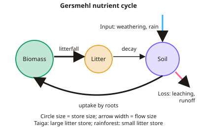

A-level Geography Year 13 · Topic 9
Ecosystems under stress
Ecosystems under stress explores how ecosystems work, and how human activity and climate change are threatening them.
We will study ecosystems as systems, global biomes, succession and biodiversity.
Then we examine tropical rainforests, Arctic tundra and coral reefs under stress, and how ecosystems can be managed and conserved.
- 9 subtopics
- 540 questions
- Free: 9.1 notes and 10 questions
In this topic
- 9.1Ecosystems as systems: trophic levels, energy flow and nutrient cycling (Gersmehl model)Free below · 86 questions
- 9.2Biomes: global distribution, climate, soils and vegetationOpen in Full Marks · 72 questions
- 9.3Succession and ecosystem change: seral stages, climax communities and disturbanceOpen in Full Marks · 77 questions
- 9.4Biodiversity: patterns, threats and ecosystem servicesOpen in Full Marks · 33 questions
- 9.5Tropical rainforest under stress: deforestation, impacts and sustainable managementOpen in Full Marks · 25 questions
- 9.6Arctic tundra under stress: fragility, climate change and resource developmentOpen in Full Marks · 79 questions
- 9.7Marine ecosystems under stress: coral reefs, bleaching, acidification and overfishingOpen in Full Marks · 36 questions
- 9.8Managing ecosystems: conservation, protected areas and a local-scale ecosystem case studyOpen in Full Marks · 69 questions
- 9.9Hot arid and semi-arid environments: climate, landforms, ecosystems and sustainable managementOpen in Full Marks · 63 questions
9.1 · Free notes
Ecosystems as systems: trophic levels, energy flow and nutrient cycling (Gersmehl model)

Key points
- An ecosystem is a community of living organisms (biotic) interacting with the abiotic environment (climate, soil, water). It is an open system with inputs (solar energy, precipitation, nutrients), stores, flows and outputs (heat, runoff, harvested biomass).
- Trophic levels are feeding positions. Producers (autotrophs) → primary consumers (herbivores) → secondary consumers → tertiary/apex consumers. Decomposers and detritivores return nutrients from dead matter. Food webs show real feeding links better than single food chains.
- Energy flow is one-way. Sunlight is fixed by photosynthesis, then passed along the food chain and lost as heat. Only about 10% (range 5–20%) is transferred between trophic levels. The rest is lost through respiration, excretion, uneaten parts and decay, so food chains are short (usually 4–5 levels).
- GPP is the total energy or biomass fixed by photosynthesis. NPP = GPP − R (R = plant respiration). NPP is measured in g m⁻² yr⁻¹ or kJ m⁻² yr⁻¹. Approximate values: tropical rainforest ~2,200, temperate forest ~1,200, boreal forest ~800, temperate grassland ~600, hot desert ~90.
- Biomass is the dry mass of living organic matter (kg m⁻² or t ha⁻¹). Pyramids of energy are always pyramidal. Pyramids of biomass can be inverted in some marine ecosystems because phytoplankton turn over very quickly.
- Nutrients (N, P, K, Ca, Mg) are recycled rather than lost as heat. They cycle between three stores: biomass, litter and soil. Inputs are weathering, precipitation/atmospheric deposition and fertiliser. Outputs are leaching, runoff and harvesting.
- The Gersmehl model shows nutrient cycling as a diagram. Circles are proportional to the size of each store (biomass, litter, soil). Arrows are proportional to the size of each flow (litterfall, decomposition, uptake, plus inputs and losses).
- Tropical rainforest: large biomass store, small litter store (warm, wet climate means rapid decomposition) and small soil store (heavy leaching and fast uptake). Cycling is rapid and the flows are thick, so the system is fragile when cleared.
- Boreal forest (taiga): small biomass, large litter store (cold climate means slow decomposition) and small soil store. Hot desert: all stores and flows are small. Temperate grassland: large soil store, rich in humus from root turnover.
- Disturbance: deforestation or slash-and-burn removes the biomass store. Ash briefly boosts the soil store, then heavy rain leaches it out. Soil fertility therefore collapses within 2–3 years, and the Gersmehl model explains why.
- Exam technique: compare the relative size of each store and flow, then explain it using temperature (decomposition rate) and precipitation (leaching and productivity).
In more detail
- Energy loss: only about 10% of energy passes from one trophic level to the next, which is why food chains rarely have more than four or five links.
- Worked energy: 10 000 kJ in plants supports about 1000 kJ in herbivores and about 100 kJ in carnivores.
- Gersmehl model: circles show the size of the biomass, litter and soil stores, and arrows show the size of nutrient flows between them.
- Productivity: tropical rainforests have the highest net primary productivity on land, about 2000 g/m² per year, while deserts manage under 100.
- Decomposers: fungi and bacteria break down dead matter, returning nutrients to the soil.
Practice
Ecosystems as systems: trophic levels, energy flow and nutrient cycling (Gersmehl model): 10 questions
Pick an answer to check it, or open the answer for the explanation.
1. In a Gersmehl nutrient cycling diagram, what does the size of each circle represent?
- The size of the nutrient store
- The number of species present
- The rate of nutrient transfer
- The energy content of the store
Show answer
A: The size of the nutrient store. Circles are proportional to the nutrient stores (biomass, litter, soil). The width of the arrows shows the size of the flows between them.
2. Which biome is typically shown in the Gersmehl model with a large litter store but small biomass and soil stores?
- Temperate grassland
- Boreal forest (taiga)
- Hot desert
- Tropical rainforest
Show answer
B: Boreal forest (taiga). Cold conditions slow decomposition, so needle litter accumulates. Productivity is low, so biomass and soil stores are small. Grassland has a large soil store.
3. A grassland has NPP of 12,000 kJ m⁻² yr⁻¹. With 10% transfer efficiency, how much energy reaches secondary consumers (kJ m⁻² yr⁻¹)?
- 120
- 1,200
- 12
- 10,800
Show answer
A: 120. Primary consumers receive 10% of 12,000 = 1,200. Secondary consumers receive 10% of 1,200 = 120 kJ m⁻² yr⁻¹.
4. A forest has GPP of 3,500 g m⁻² yr⁻¹ and plant respiration of 1,300 g m⁻² yr⁻¹. What is its NPP (g m⁻² yr⁻¹)?
- 1,300
- 2.7
- 4,800
- 2,200
Show answer
D: 2,200. NPP = GPP − R = 3,500 − 1,300 = 2,200 g m⁻² yr⁻¹.
5. Why is the litter store small in a tropical rainforest?
- Warm, moist conditions cause rapid decomposition
- Soils are too acidic for decomposers
- Heavy rain washes litter away
- Trees drop few leaves
Show answer
A: Warm, moist conditions cause rapid decomposition. High temperatures and moisture mean decomposers work fast. Litter is broken down within months and the nutrients are taken up again by roots.
6. Which statement about energy and nutrients in ecosystems is correct?
- Both are fully retained at each trophic level
- Both are recycled indefinitely
- Nutrients flow one way; energy is recycled
- Energy flows one way and is lost as heat; nutrients are recycled
Show answer
D: Energy flows one way and is lost as heat; nutrients are recycled. Energy enters as sunlight and leaves as heat, so it cannot be reused. Nutrients cycle between biomass, litter and soil, although some are lost by leaching.
7. What is the main reason food chains rarely have more than five trophic levels?
- Predators are always larger than prey
- Decomposers consume top predators
- Nutrients run out at higher levels
- Too little energy remains after losses at each level
Show answer
D: Too little energy remains after losses at each level. About 90% of energy is lost at each transfer through respiration, heat and waste. Little energy is left to support more levels.
8. Farmers burn rainforest to grow crops, but yields collapse within 2–3 years. Which explanation fits the Gersmehl model?
- Nutrients from the burnt biomass are leached, and the small soil store cannot replace them
- Litter decomposes too slowly to supply nutrients
- Burning permanently raises soil pH above crop tolerance
- The large soil store is quickly used up by crops
Show answer
A: Nutrients from the burnt biomass are leached, and the small soil store cannot replace them. Most rainforest nutrients are in the biomass. Once it is removed, ash nutrients are washed out by heavy rain. The soil store is small, so fertility falls fast.
9. In the food chain grass → grasshopper → frog → snake → hawk, the frog is a:
- Tertiary consumer
- Decomposer
- Secondary consumer
- Primary consumer
Show answer
C: Secondary consumer. Grass is the producer, the grasshopper is the primary consumer, and the frog eats the primary consumer, so it is a secondary consumer.
10. Which is an OUTPUT from a natural ecosystem's nutrient system?
- Leaching of nutrients to groundwater
- Weathering of parent rock
- Nutrients dissolved in rainfall
- Nitrogen fixation by bacteria
Show answer
A: Leaching of nutrients to groundwater. Leaching removes dissolved nutrients from the soil store, so it is an output. Weathering, rainfall and nitrogen fixation add nutrients, so they are inputs.
Keep going in Full Marks
Full Marks has 86 questions on Ecosystems as systems: trophic levels, energy flow and nutrient cycling (Gersmehl model) (76 more than here), set out in practice levels. You also get notes and 3D models for all 9 subtopics of Ecosystems under stress, plus games, timed exams and past papers.
On your exam board
- AQATopic 2: Ecosystems under stress
- OCR ATopic 3.3: Geographical debates: exploring oceans
- CambridgeTopic 7: Tropical environments, Topic 10: Hot arid and semi-arid environments
Not in the Edexcel specification.